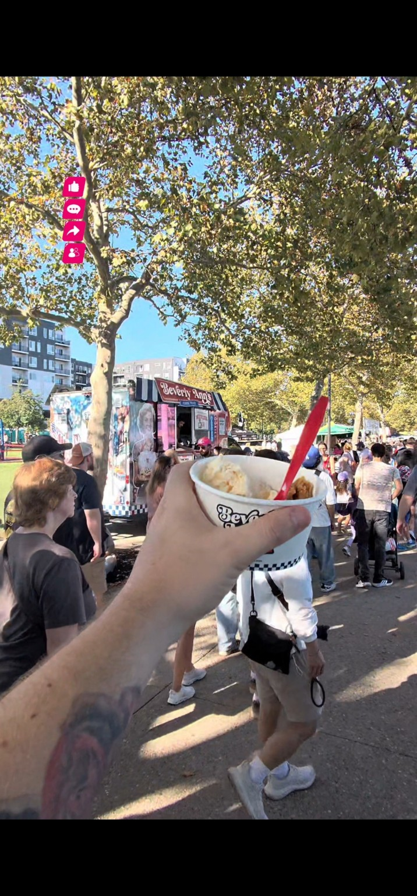
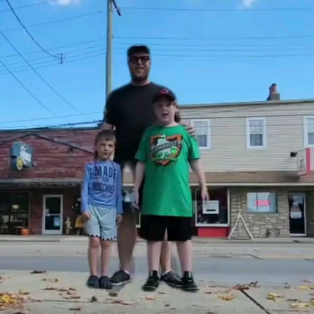

On the map · Waynesville Fall Fest
On the map · Waynesville Fall FestSep 27, 2026
 HATZCINCINNATI & BEYONDLet’s collab
HATZCINCINNATI & BEYONDLet’s collab COME ALONG WITH HATZ
Finding the next great bite, the businesses worth knowing, and a little adventure along the way. Cincinnati and beyond.

A LITTLE TASTE OF CINCINNATICOME FOR THE COOKIES.Stay for the Ann-Wich.Watch the Beverly Ann’s visitLOCALTHE ADVENTURE KEEPS GOING
Food stops, family adventures, and whatever we get into next.
Updated automatically from YouTube. Visit the channel for everything.
On the map · Waynesville Fall FestSep 27, 2026
 On the map · WEBN Fireworks at Sawyer Point
On the map · WEBN Fireworks at Sawyer PointSep 19, 2026
 On the map · Eastgate Vendors Market
On the map · Eastgate Vendors MarketSep 12, 2026
 On the map · WEBN Fireworks at Sawyer Point
On the map · WEBN Fireworks at Sawyer PointSep 7, 2026
 On the map · The Meat Store
On the map · The Meat StoreSep 6, 2026
 On the map · Kings Island
On the map · Kings IslandSep 5, 2026
Catch up with the crew.
Follow Hatz on TikTok ↗THE ADVENTURE KEEPS GOING.
TikTok is where you’ll find me most. Join the crew for more food, local finds, and family adventures.
Follow @hatzreviews on TikTok ↗
A DAD. A CAMERA. A LITTLE CURIOSITY.HEY, I’M HATZ.
Veteran. Dad of six. Adventure seeker.
I’m out exploring the food, people, and places around Cincinnati—and taking you along. Sometimes it’s a restaurant I’ve been meaning to try. Sometimes it’s a small business with a story to share. Sometimes it’s just a fun day with the family.
Know a place we should check out? I’d love to hear about it.
Send me a local recommendationFOR LOCAL BUSINESSES & BRANDS
Opening something new? Making something worth trying? Bringing people together? Let’s explore a collaboration that fits your business and the Hatz audience.
Email me your business name, location, and collaboration idea.
If you have a date in mind, include that too.
Every collaboration starts with a conversation. Scope, timing, and any paid partnership details are agreed before work begins.